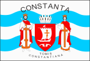

Constanța se află în județul cu același nume, în partea de sud-est a României, pe coasta Mării Negre. Constanța este un centru industrial, comercial și turistic de importanță națională. Aici se află cel mai mare port al României și cel de-al șaisprezecelea al Europei.
Pe lângă atracțiile turistice și culturale, Constanța este un important centru economic și industrial, datorită portului său strategic. Acesta facilitează comerțul internațional și dezvoltarea economică a întregii regiuni. Portul Constanța este unul dintre cele mai mari din Europa, contribuind semnificativ la economia României prin activități de transport maritim, industrie și turism.
Cu ajutorul acestor link-uri puteți vedea:
